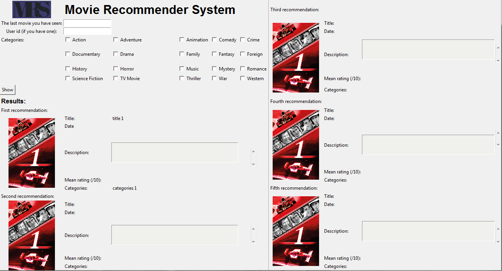
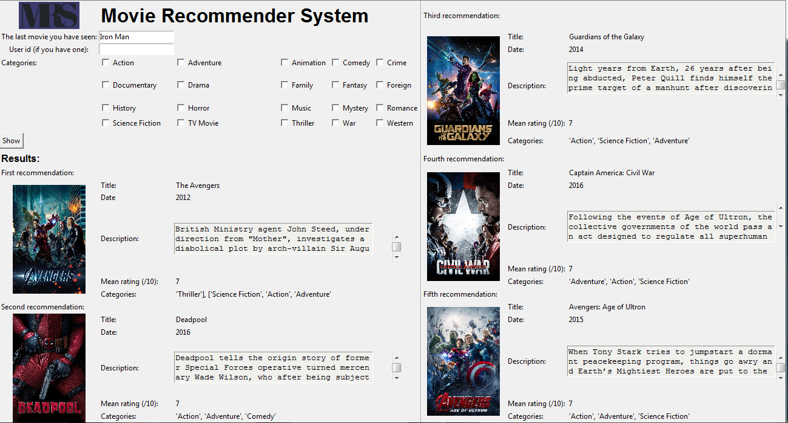
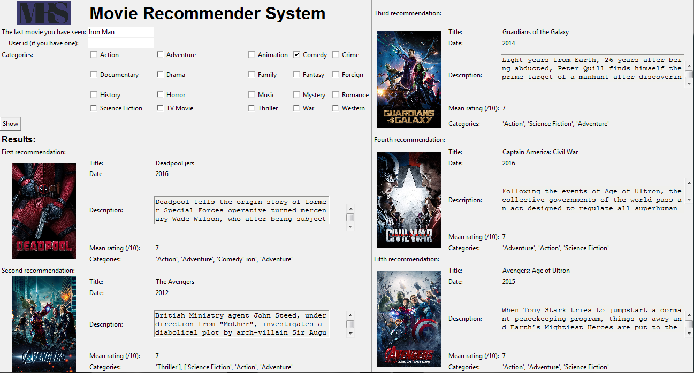
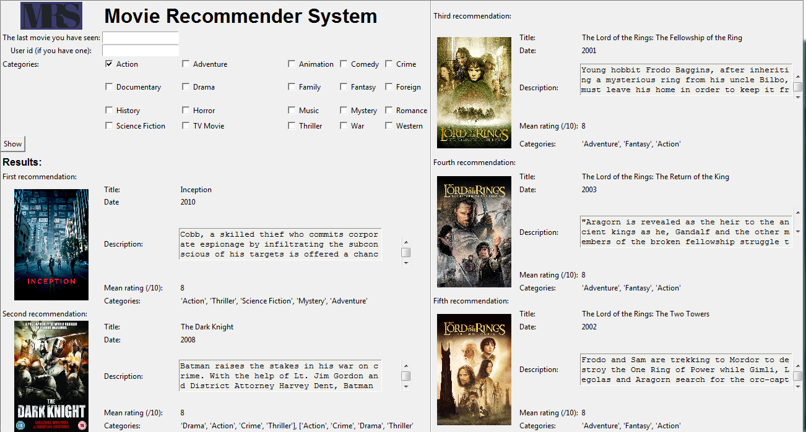
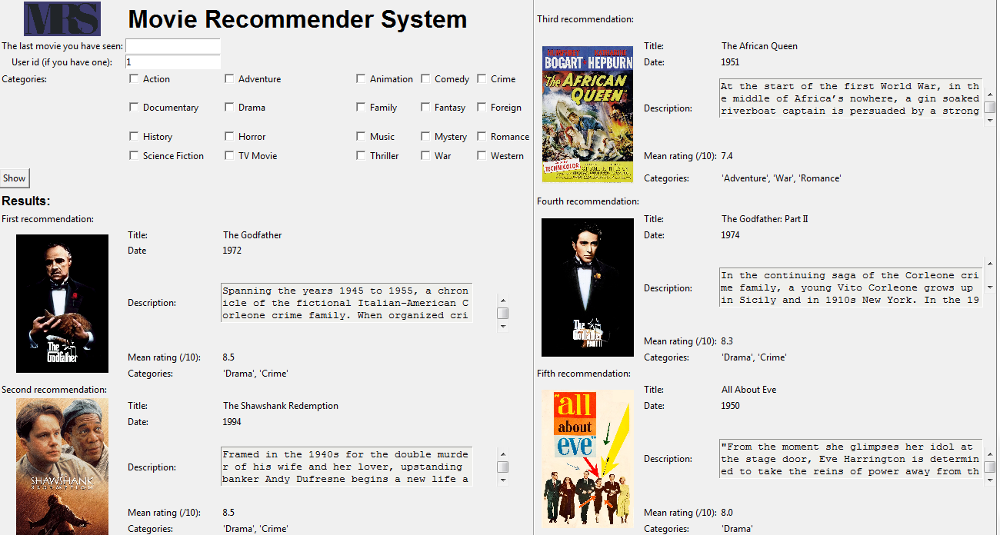
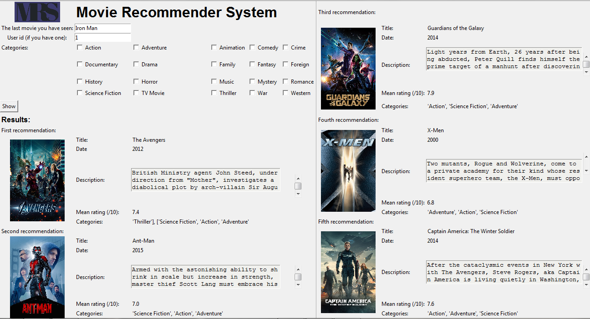
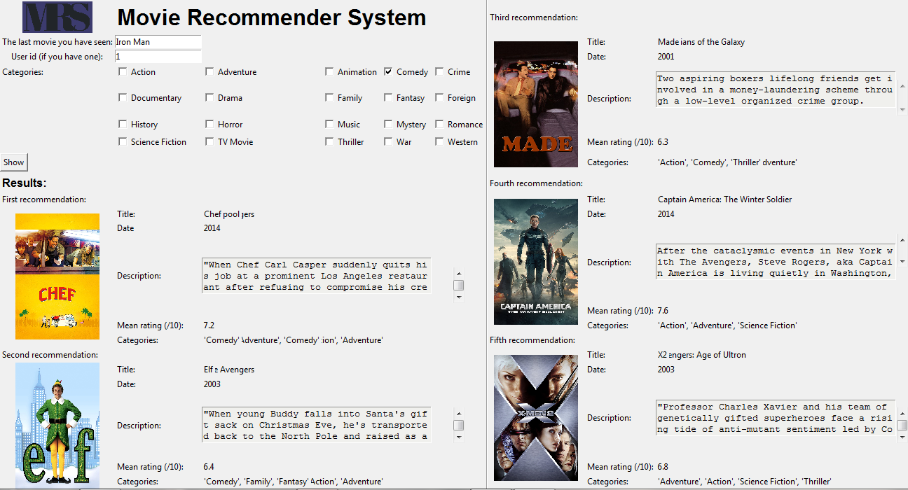

Interface
In this part, the interface will be presented. There are also some examples according to the different cases of use.
Here is the interface before any research. As you can see, many checkboxes are present, one per genre. The movies recommended are displayed with their image, their title, their year, their rating, their genres and their description. Only the top 5 movies are displayed.

Let's see now an example with only the last movie watched. In this example, it is the movie Iron Man:

Let's see now an example with only the last movie watched and a genre. In this example, the movie Iron Man and the genre Comedy are selected:

As you can see, only one of the 5 top movies were a comedy. It was Deadpool. So now, this movie is first. The others are after. Now let's study if only a cateogry is selected:

In our case, the genre Action was selected. The top 5 action movies have been selected. They have the best mean rating and also are among the most popular. What is user id? In the dataset used, the ratings have been realized by some users, which have an ID. So it is possible to recommand movies knowing what they watched and what they liked. This is why a SVD is used. For example, for the user 1:

Those recommendation can be combined with the last movie they watched. If user 1 watched Iron Man then the result is:

If user 1 watched Iron Man and what to watch a comedy movie, here are the recommendations:

As you can see, 2 comedies have been recommended. Then the recommendations are completed with movies similar to Iron Man which the User 1 should like.